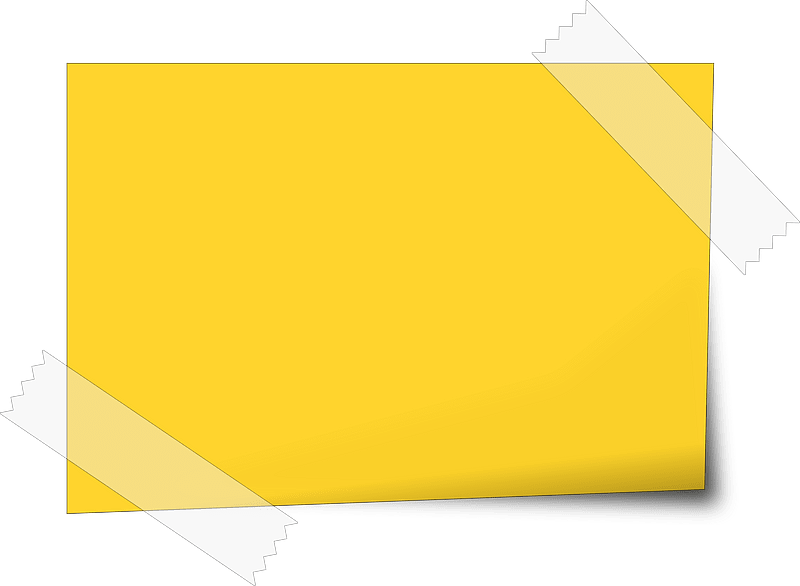

Ponga el mouse adentro
de una imagen...
Nita es una Brawler Común que se desbloquea como
recompensa del Camino de Trofeos al llegar a los 15 trofeos.
Tiene una salud moderada y ataques con ondas
de choque que tienen un alcance moderado y
puede golpear a múltiples enemigos. Ella es más
notable por la habilidad de su Súper de invocar a un oso.
Este oso tiene alta salud y ataques cuerpo a
cuerpo rápidos y peligrosos. Su Gadget, "Garras de oso",
aturdirá a todos los enemigos en un área alrededor de su oso.
Su segundo Gadget, "Piel Protectora" le proporciona
a su oso un escudo que reduce el 30% del daño recibido.
Su primera Habilidad estelar, "Hermano oso",
cura a su oso por 500 de salud cuando ella misma ataca
al enemigo, y el oso cura a Nita por 500 cuando ataca al enemigo,
y su segunda Habilidad estelar, "Zarpazo veloz",
aumenta la velocidad de ataque de su oso en un 60%
Descripcion De "Colt"
Colt es un luchador común que se desbloquea como
recompensa de Trophy Road al alcanzar los 60
trofeos. Tiene poca salud pero una gran cantidad
de daño. Su ataque es una andanada de seis balas
de largo alcance. Su Súper es una descarga de mayor
alcance de doce balas penetrantes que pueden destruir
obstáculos. Su primer Gadget, Speedloader, recarga
instantáneamente 2 de sus municiones. Su segundo Gadget,
Silver Bullet, convierte su próximo ataque en una sola bala
perforante que destruye obstáculos y causa el daño de dos de
las balas de su ataque principal. Su primer Star Power, Slick
Boots, aumenta pasivamente su velocidad de movimiento.
Su segundo Star Power, Magnum Special, aumenta el alcance
y la velocidad de la bala de su ataque principal.
Descripcion De "Bull"
Bull es un Brawler común que se desbloquea como
recompensa de Trophy Road al alcanzar los 250 trofeos.
Bull tiene mucha salud, una velocidad de movimiento
rápida y una gran cantidad de daño a corta distancia.
Su Rasgo le permite cargar su Súper de los enemigos
que lo dañan. Su ataque es un disparo de múltiples
cartuchos de escopeta que infligen un gran daño de cerca.
Su Súper lo hace cargar en cierta dirección, dañando a
los enemigos y destruyendo obstáculos en su camino, lo
que le permite acercarse o escapar de los enemigos.
Su primer Gadget, T-Bone Injector, lo cura
instantáneamente por una cantidad considerable.
Su segundo Gadget, Stomper, detiene su Super y
pisotea el suelo, ralentizando a los enemigos dentro del alcance.
Su primer Star Power, Berserker, duplica su velocidad de recarga
cuando cae por debajo del 60% de salud. Su segundo Star Power,
Tough Guy, lo protege cuando cae por debajo del 40% de salud.

Descripcion De "Jessie"
Jessie es una Brawler común que se desbloquea
como recompensa de Trophy Road al alcanzar los
500 trofeos. Tiene salud moderadamente baja, daño
moderado y una velocidad de recarga bastante lenta.
Su ataque es un orbe eléctrico que rebota entre los
enemigos. Su Súper coloca a Scrappy, una torreta con
salud y daño moderados que sobresale en el ataque, la
distracción y la defensa. Su primer Gadget, Spark Plug,
crea una onda de choque alrededor de Scrappy que ralentiza
a los enemigos. Su segundo Gadget, Recoil Spring, duplica
la velocidad de ataque de Scrappy durante 5 segundos. Su primer
Star Power, Energize, le permite curar su torreta atacándola y su
segundo Star Power, Shocky, le permite a su torreta disparar mini
orbes de energía que pueden rebotar entre los enemigos.
Descripcion De "Brock"
Brock es un Brawler común que se desbloquea como
recompensa de Trophy Road al alcanzar los 1000 trofeos.
Tiene poca salud pero una gran cantidad de daño. Su ataque
dispara cohetes de largo alcance que explotan y causan daño
de área en un radio corto. Su Super dispara una andanada
de cohetes en un área grande. Su primer artilugio, Rocket Laces,
le permite disparar a sus pies, dañar a los enemigos cercanos
y derribarlos, y lanzar a Brock por los aires.
Su segundo artilugio, Rocket Fuel, convierte el próximo
ataque de Brock en un megacohete que tiene un radio de
explosión más grande, destruye paredes y viaja más rápido.
Su primer Star Power, ¡Más cohetes!, aumenta la cantidad de
cohetes disparados desde su Súper. Su segundo Star Power,
Rocket No. Four, aumenta la capacidad de munición de Brock a 4.
Descripcion De "Dynamike"
Dynamike es un Brawler común que se desbloquea como
recompensade Trophy Road al alcanzar los 2000 trofeos.
Tiene poca salud pero una gran cantidad de daño.
Ataca lanzando cartuchos de dinamita sobre obstáculos
que explotan y causan un gran daño en un radio medio.
Para su Súper, lanza un gran barril de dinamita que
inflige un daño muy alto y derriba a los enemigos
sobrevivientes en un gran radio mientras también
destruye obstáculos. Su primer Gadget, Fidget Spinner,
le permite girar con un impulso de velocidad y disparar
rápidamente cartuchos de dinamita en un gran radio a
su alrededor. Su segundo Gadget, Satchel Charge, hace
que el próximo ataque principal de Dynamike aturda a
los enemigos brevemente. Su primer Star Power, Dyna-Jump,
permite que su ataque y Super lo impulsen sobre obstáculos
y Brawlers. Su segundo Star Power, Demolition,
le permite a su Super causar más daño.
Descripcion De "Tick"
Tick es un luchador común que se desbloquea como
recompensa de Trophy Road al alcanzar los 4000 trofeos.
Tiene la salud más baja de cualquier Brawler pero tiene
un alto potencial de daño. Ataca lanzando tres
minas sobre obstáculos que explotan al entrar en
contacto con un objetivo opuesto o después de
un retraso. Su Súper se separa y lanza su cabeza,
que persigue al enemigo más cercano y explota,
infligiendo un gran daño y derribando a los
enemigos mientras también destruye obstáculos.
Su primer Gadget, Mine Mania, duplica la cantidad
de minas que dispara su próximo ataque.
Su segundo Gadget, Last Hurrah, le otorga un
escudo temporal antes de que explote,
infligiendo daño y derribando a los enemigos.
Su primer Star Power, Well Oiled, le permite
curarse a sí mismo antes de lo normal. Su segundo
Star Power, Automa-Tick Reload, reduce el
tiempo de recarga de su ataque.
Descripcion De "Bo"
Bo es un peleador común desbloqueado como
recompensa de Trophy Road al alcanzar los
3000 trofeos. Tiene una salud moderada, una
inmensa utilidad con su Súper y una producción
de daño potencialmente alta pero inconsistente.
Ataca disparando tres flechas de largo alcance
que explotan en un pequeño radio al final de
su alcance. Su Súper coloca tres trampas que
pueden activarse para explotar un momento
después al ser pisadas por un enemigo,
dañando y derribando a los enemigos al explotar.
Su primer Gadget, Super Totem, coloca un tótem
que carga lentamente contra los Supers de Bo y
sus aliados mientras se encuentra dentro de su
área de efecto. Su segundo Gadget, Tripwire,
detona manualmente sus trampas. Su primer Star Power,
Circling Eagle, aumenta su campo de visión en los arbustos.
Su segundo Star Power, Snare a Bear, hace que sus
trampas aturdan a los enemigos momentáneamente en lugar de derribarlos.
Descripcion De "8-Bit"
8-Bit es un Brawler común que se desbloquea como
recompensa de Trophy Road al alcanzar los 6000 trofeos.
Tiene mucha salud y una gran cantidad de daño,
pero sufre al tener la velocidad de movimiento más
lenta de cualquier Brawler. Ataca disparando
rayos láser de largo alcance y muy dañinos.
Su Super genera un refuerzo de daño que aumenta
el daño de él y sus aliados dentro de su radio.
Su primer Gadget, Cheat Cartridge, lo teletransporta
instantáneamente a su Damage Booster. Su segundo
Gadget, Extra Credits, triplica la cantidad de
láseres que dispara su próximo ataque. Su primer Star Power,
Boosted Booster, aumenta significativamente su rango de
Damage Booster y el aumento de daño. Su segundo Star Power,
Plugged In, aumenta su velocidad de movimiento dentro
de un radio alrededor del Damage Booster.
Descripcion De "Emz"
Emz es un luchador común que se desbloquea como
recompensa de Trophy Road al alcanzar los 8000 trofeos.
Ella tiene una salud moderada pero un alto potencial de daño.
Su ataque es un disparo amplio de laca para el
cabello que inflige daño con el tiempo y causa el
mayor daño si el enemigo está en medio del ataque.
Su Súper crea una nube temporal en un gran radio a
su alrededor que se ralentiza y causa daño con el
tiempo a los enemigos dentro de ella. Su primer Gadget,
Friendzoner, hace retroceder a todos los enemigos
cercanos al mismo tiempo que los daña. Su segundo Gadget,
Acid Spray, permite que su próximo ataque atraviese las
paredes pero hace un poco menos de daño. Su primer
Star Power, Bad Karma, hace que cada tic de su ataque
aumente el daño de manera adicional. El segundo Star Power
de Emz, Hype, la cura ligeramente cada segundo
que su Super daña a un enemigo.
Descripcion De "Stu"
Stu es un peleador común que se desbloquea como
recompensa de Trophy Road al alcanzar 10000 trofeos.
Stu tiene poca salud pero un alto potencial de daño explosivo,
gran movilidad con su Súper y la habilidad única
de cargar su Súper de un solo golpe.
Ataca con dos fuegos artificiales, y su Súper es
una carrera corta que deja un rastro de goma quemada
detrás de él, que quema a los enemigos si lo tocan.
Su primer Gadget, Speed Zone, deja caer un refuerzo
que aumenta la velocidad de movimiento de él y sus
aliados en una gran área de efecto a su alrededor.
Su segundo Gadget, Breakthrough, permite que su próximo
Super destruya obstáculos y envíe los escombros de los
obstáculos destruidos para dañar a los enemigos.
Su primer Star Power, Zero Drag, aumenta el alcance de su Super.
Su segundo Star Power, Gaso-Heal, cura ligeramente a Stu cuando se usa su Super.